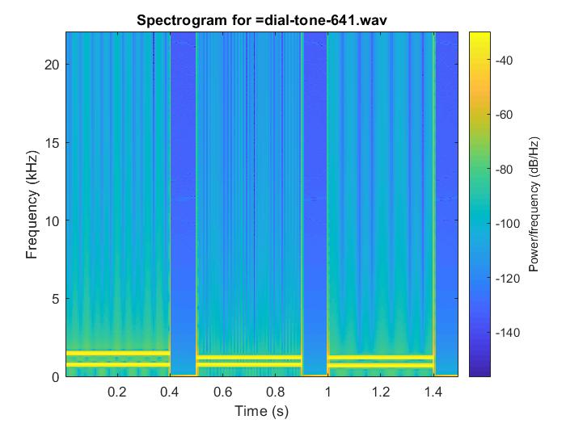

List of Audio Libraries and References
The following list of C / C++ libraries and references for audio processing is provided for your convenience only.
You are not required to use any of these libraries / references for this homework.
-
Keep It Simple, Stupid FFT library.
-
Audacity. Useful for analyzing raw audio (waves) and modifying audio files (ie. stereo <--> mono).
Part 1a: Slow DFT
Implement the Discrete Fourier Transform (DFT) in C, C++, MATLAB, Java, or Python. Implement the slow version that multiplies the transform matrix by the input vector in O(N2) time. Your code should support input vectors of size up to 1024.
% Function that implements the slow discrete fourier transform function r = mySDFT(x) % Transpose the input vector to enable matrix multiplication x = x.'; % Compute the DFT matrix to multiply against the input array to get the % fourier transform a = dftmtx(length(x)); % Matrix multiply the input with the DFT matrix to determine the DFT of % the input vector r = a*x; end
Part 1b: Slow IDFT
Implement the Inverse Discrete Fourier Transform (IDFT) in C, C++, MATLAB, Java, or Python. Implement the slow version that multiplies the transform matrix by the input vector in O(N2) time. Your code should support input vectors of size up to 1024.
% A function that represents the slow inverse discrete foruier transform function r = mySIDFT(x) % Transpose the input vector to enable matrix multiplication x = x.'; % Compute the inverse DFT matrix to multiply against the input array to get the % fourier transform a = conj(dftmtx(length(x)))/length(x); % Matrix multiply the input with the DFT matrix to determine the DFT of % the input vector r = a*x; end
Part 2a: FFT
Implement the Fast Fourier Transform (FFT) in C, C++, MATLAB, Java, or Python. Implement the fast version that uses recursion and runs in O(n log2 n) time. Note that you are not allowed to use MATLAB's implementation nor any other existing library for this problem. Your code should support input vectors of size up to 1024. Use your code from Part 1a to cross-check your implementation.
% Recursive function that computes the Fast Fourier Transform in O(nlogn) % time function F = myFFT(f) % Check for the base case n = length(f); if n == 1 F = f; return; end % Split the signal up into even and odd elements for faster computing fEven = f(1:2:n); fOdd = f(2:2:n); FEven = myFFT(fEven); FOdd = myFFT(fOdd); % Apply the vectorized wn constants from the DFT matrix wn = exp(2*pi*1i.*[0:1:(n/2)-1]/n); FOdd = FOdd.*wn; % Store the final result F = [FEven+FOdd FEven-FOdd]; end
Part 2b: IFFT
Implement the Inverse Fast Fourier Transform (IFFT) in C, C++, MATLAB, Java, or Python. Implement the fast version that uses recursion and runs in O(n log2 n) time. Note that you are not allowed to use MATLAB's implementation nor any other existing library for this problem. Your code should support input vectors of size up to 1024. Use your code from Part 1b to cross-check your implementation.
% Recursive function that computes the Fast Fourier Transform in O(nlogn) % time function F = myIFFT(f) % Check for the base case n = length(f); if n == 1 F = f; return; end % Split the signal up into even and odd elements for faster computing fEven = f(1:2:n); fOdd = f(2:2:n); FEven = myIFFT(fEven); FOdd = myIFFT(fOdd); % Apply the vectorized wn constants from the DFT matrix wn = exp(-2*pi*1i.*[0:1:(n/2)-1]/n); FOdd = FOdd.*wn; % Store the final result F = [FEven+FOdd FEven-FOdd]; end
Part 3a: FFT check
Using your implementation from Part 2a, compute the Discrete Fourier Transform of the following vector:
[0, 0.7071, 1, 0.7071, 0, -0.7071, -1, -0.7071]
Note: you may want to use sqrt(2)/2 instead of 0.7071.
// Insert your resulting vector here myFFTResult = 0.0000 + 0.0000i 0.0000 + 4.0000i 0.0000 + 0.0000i 0.0000 - 0.0000i 0.0000 + 0.0000i -0.0000 + 0.0000i 0.0000 + 0.0000i -0.0000 - 4.0000i
Compare your output with the output generated by MATLAB's fft() method for the same vector 'x'. Include the result below, and any discrepancies. You may also use one of the FFT libraries above, if you choose.
// Insert your new resulting vector here matlabFFTResult = 0.0000 + 0.0000i 0.0000 - 4.0000i 0.0000 + 0.0000i 0.0000 + 0.0000i 0.0000 + 0.0000i 0.0000 - 0.0000i 0.0000 + 0.0000i 0.0000 + 4.0000i // Insert any comments here There were only slight differences based on rouding
Part 3b: IFFT check
Using your implementation from Part 2b, compute the inverse Discrete Fourier Transform of the following vector:
[0, -4i, 0, 0, 0, 0, 0, 4i]
// Insert your resulting vector here
myFFTResult =
0 -5.6569 -8.0000 -5.6569 0 5.6569 8.0000 5.6569
Compare your output with the output generated by MATLAB's ifft() method for the same vector 'X'. Include the result below, and any discrepancies. You may also use one of the IFFT libraries above, if you choose.
// Insert your new resulting vector here matlabFFTResult = 0 -5.6569 -8.0000 -5.6569 0 5.6569 8.0000 5.6569 // Insert any comments here Both my and the build-in Matlab solution returned the same result
Part 4
Using any FFT and IFFT implementation, compute and plot the spectrograms for the following 3 audio files. In case you are curious, those audio snippets came from the game that was used in HW3.
| Audio Data | Spectrogram |
|---|---|
drawSpectrogram('ball_bounce_brick_mono.wav');
drawSpectrogram('ball_bounce_paddle_mono.wav');
drawSpectrogram('paddle_widening_mono.wav');
function drawSpectrogram(fileName)
[Y,fs]=audioread(fileName); % read the WAV file
Y = fft(Y);
Y = ifft(Y);
figure; spectrogram(Y(:,1), 512, 256, 512, fs, 'yaxis');
title(strcat(strcat('Spectrogram for =', fileName)));
end
Part 5
Repeat what you did in part 4, but now process three audio files that you recorded while playing your favorite game. Describe how you recorded the audio and what parameters were used (e.g., sampling frequency, duration). Also, describe the parameters that you used to compute the spectrograms (you can put this in the comments for your code). Modify the HTML template so that you files are linked and your spectrograms are show to the right of each audio file.
| Audio Data | Spectrogram |
|---|---|

|
|
// Code the records and stores the audio
% Configure the Matlab audio recorder
Fs = 44100;
numBits = 24;
numChannels = 1;
% Record the game audio
recObj = audiorecorder(Fs, numBits, numChannels);
disp('Start Recording...');
recordblocking(recObj,5);
disp('End of Recording');
% Save the resulting game audio to a file
audiowrite('PokemonMusic.wav', getaudiodata(recObj), Fs);
// Code that processes the audio and creates the spectrogram
% Call function to draw spectrogram for all audio files
drawSpectrogram('PokemonBattleMusic.wav');
drawSpectrogram('PokemonHealingSounds.wav');
drawSpectrogram('PokemonMusicWall.wav');
% Function that draws the spectrogram of input audio file
function drawSpectrogram(fileName)
% Read the audio
[Y,fs]=audioread(fileName); % read the WAV file
% FFT and inverse FFT (can be changed to updated spectrogram format)
Y = fft(Y);
Y = ifft(Y);
% Display the resulting spectrogram
figure; spectrogram(Y(:,1), 512, 256, 512, fs, 'yaxis');
title(strcat(strcat('Spectrogram for =', fileName)));
end
Part 6
Synthesize the dial tones for three different area codes (only 3 digits). Save these as audio files and link to them in the HTML template. Then plot the spectrograms for each audio file.
| Audio Data | Spectrogram |
|---|---|
|  | |
%%%%%%%%%%%%%%%%%%%%%%%%%%%%%%%%%%%%%%%%%%%%%%%%%%%%%%%%%%%
% Create the dial tone audio files for various area codes %
%%%%%%%%%%%%%%%%%%%%%%%%%%%%%%%%%%%%%%%%%%%%%%%%%%%%%%%%%%%
fs = 44100;
% Dial area code for Chicago, IL (312)
dialAreaCode = dial_number('312', 0.5, 0.2, fs);
sound(dialAreaCode, fs);
audiowrite('dial-tone-312.wav', dialAreaCode, fs);
% Dial area code for Orlando, FL (927)
dialNumber = dial_number('927', 1, 0.3, fs);
sound(dialNumber, fs);
audiowrite('dial-tone-927.wav', dialNumber, fs);
% Dial area code for Mason City, IA (641)
dialNumber = dial_number('641', 0.4, 0.1, fs);
sound(dialNumber, fs);
audiowrite('dial-tone-641.wav', dialNumber, fs);
%%%%%%%%%%%%%%%%%%%%%%%%%%%%%%%%%%%%%%%%%%%%%%%%%%%%%%
% Plot the spectograms for the dial tone audio waves %
%%%%%%%%%%%%%%%%%%%%%%%%%%%%%%%%%%%%%%%%%%%%%%%%%%%%%%
plotSpectogram('dial-tone-312.wav');
plotSpectogram('dial-tone-927.wav');
plotSpectogram('dial-tone-641.wav');
% This function plots the spectogram for the given audio file (must be in
% active directory
function plotSpectogram(fileName)
[Y,fs]=audioread(fileName); % read the WAV file
% Y - audio data samples
% 512 - window size (in samples)
% 256 - overlap (in samples)
% 512 - FFT size (in samples)
% fs - sampling frequency (in Hz)
% 'yaxis' - put the frequencies along the y axis
figure; spectrogram(Y, 512, 256, 512, fs, 'yaxis');
title(strcat('Spectrogram for =', fileName));
end
Part 7: Find Published FFT and IFFT Algorithms
Find at least 5 instances of published FFT algorithms AND at least 5 instances of published IFFT algorithms. For this to count, your source must be a published book. Also, for each instance, you must find either a complete algorithm in pseudo code or a complete source code (in any language). Math only descriptions don't count.
For each instance, submit a picture or a scanned copy of the page(s) with the algorithm, the page of the book that contains the title and the author name(s), and the page that contains the edition and the book's ISBN number.
Warning: to solve this part you may need to visit to the library!
Insert links to your images here.
Extra Credit
Part EC1: Corrections to Published Algorithms
While collecting sources for part 7, if you find any published algorithms that contain errors, please correct the errors (but don't write them in the book) and submit the corrections. You get 1% extra credit for each error that you find. The submission instructions are the same as in part 7, but write the corrections in red on the scanned page.
Insert links to your images here.
Part EC2: Non-Recursive FFT
Implement a non-recursive version of the Fast Fourier Transform (FFT) in C, C++, MATLAB, Java, or Python. This is the iterative version of the algorithm that still runs in O(N log2N) time, but does not use recursion. Your code should support input vectors of size up to 1024. Once again, this must be your own implementation. Run you code on the vector from part 3a and report the result.
// Insert your code here
// Insert your resulting vector here